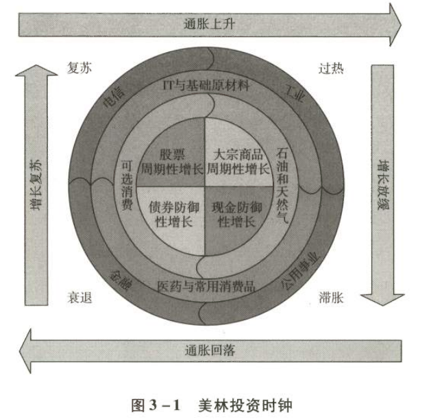

投资是一件持续终身的事
引言
珍爱生命，远离股市，做起来似乎很简单。然而，投资是每个人都无法躲避的游戏。退出股市，并不是不投资，而是将自己用智力、体力或者运气换来的财富，投资了股票之外的其他产品，比如活期存款、定期存款、货币基金、各种债权、房地产、贵金属、金融衍生品、保险产品、外汇等。
一、财富的两种来源
1.1 睡前收入 vs 睡后收入
人的财富来源，套用一句网络流行语，可以分为"睡前收入"和"睡后收入"两种：
| 收入类型 | 定义 | 特点 | 示例 |
|---|---|---|---|
| 睡前收入 | 干活就有、睡着了就没有 | 用自己的体力或智力换钱 | 工资、劳务报酬、咨询费 |
| 睡后收入 | 被动性收入 | 哪怕睡着了，也在自动增值 | 股息、房租、利息、版税 |
两种收入形态中，"睡后收入"占比越高，你就有越多可供自由支配的时间，做选择时受到的制约也就越少。收入来源若全部由"睡后收入"构成，你就进入了财务自由状态。
1.2 财富积累的必经之路
一个人，只要不是含着金钥匙出生的，财富最初总是靠"睡前收入"来积累。这些财富在满足消费需求后，必须通过配置在能带来"睡后收入"的资产上，才能实现保值增值。
认知升级路径
受限于认知水平，我们最先接触的"睡后收入"，可能都是银行存款——还是年收益率"高"达0.35%的活期存款。其后由于我们多学习了一点点，开始接触定期存款、通知存款、余额宝、零钱通、理财产品……收益率开始从0.35%提升到3%～5%。
这个收益率依然远在社会平均财富增长率之下，依然属于将自己辛辛苦苦贡献体力或脑力换来的财富，无偿地送给别人一部分。
1.3 通货膨胀：合法的窃贼
将自己口袋里的财富掏出来送给别人，当然不是难事。甚至由于"合法窃贼"的存在，你连掏的动作也可以省掉——通货膨胀正日夜不停地将你用汗水或者脑汁换来的财富，一点点偷走。
中国货币扩张数据
| 时间 | 广义货币总量（M2） | 增长倍数 |
|---|---|---|
| 1990年末 | 1.53万亿元 | - |
| 2020年末 | 218.7万亿元 | 143倍 |
这种货币购买力的缩水程度，甚至不需要任何数据来解释说明，生活在其中的普通人都能明显感受到。
这是"法币"①时代注定的特点：现金是100%确定亏损的一种资产。
如果不想将财富拱手送给别人，或者不想被通货膨胀悄悄偷走，那么，投资——也就是赚取"睡前收入"的同时，将消费剩余配置成可以产生"睡后收入"的资产——就是每个人都无法躲避、必须持续一生的事。
① 法币：指法定货币，即本身无价值或价值微不足道，由国家法律规定强制流通，发挥货币职能的货币。
二、不同的选择，不同的结局
投资其实就是将100%确定亏损的现金资产，换成其他具备盈利可能的资产，就这么简单。然而，选择换成哪种资产，长期来看结果会有巨大的差异，不同的选择可能带来天差地别的人生幸福感和财富值。
2.1 复利的力量：50年投资回报对比
假设人的一生有50年有效投资时间，1个单位的本金，在不同收益率下的终值：
表1：投资回报对比（50年期）
| 年化回报率 | 3% | 5% | 7% | 10% | 12% | 15% | 20% | 25% |
|---|---|---|---|---|---|---|---|---|
| 终值 | 4.38 | 11.47 | 29.46 | 117.39 | 289 | 1083.66 | 9100.44 | 70064.92 |
收益率的微小差异，经过时间的复利，会产生惊人的差距！
2.2 真实案例模拟：三个年轻人的不同命运
假设条件
- 甲、乙、丙三人都出生于2000年
- 2022年22岁时都拥有1万元投资本金
- 从22岁到60岁，每年从工资收入中节省出3万元做投资
- 60岁退休后不再增加投入，开始每年抽取100万元用于医疗、养老和消费
- 假设三人均在2080年80岁时离开人世
投资选择
| 投资者 | 投资标的 | 年化收益率 |
|---|---|---|
| 甲 | 货币基金 / 保本理财 | 3% |
| 乙 | 股市投资 | 10% |
| 丙 | 股市投资 | 15% |
表2：甲、乙、丙投资回报差异
| 年龄节点 | 甲（3%） | 乙（10%） | 丙（15%） |
|---|---|---|---|
| 22岁起点 | 1万元 | 1万元 | 1万元 |
| 22～60岁投入 | 年增加3万元 | 年增加3万元 | 年增加3万元 |
| 60岁财富值 | 207.6万元 | 1126.5万元 | 4230.4万元 |
| 63岁财富值 | -88.9万元，破产 | 1135.3万元 | 6034.6万元 |
| 80岁财富值 | 穷困潦倒，老无所依 | 1278.5万元 | 57456.2万元 |
甲的数据只能让我们眼前浮现出捡瓶子度日的凄凉晚景。他不可能负担年开支100万元的生活，只能在省吃俭用中艰难度日。而乙和丙不仅可以安享晚年，还能在离开人世时，给亲人留下一笔财富。
这一切差异，不在于他们工作时赚多少，而在于他们选择将工作期间靠智力和体力换来的财富配置在哪儿。
千万别觉得100万元很多，以每年3%的通胀率推测，2060年的100万元实际购买力也就相当于今天的30万元左右。
2.3 时间的价值：投资期限比本金更重要
投资持续时间这一要素对于财富终值的影响，甚至比本金和收益率更大。
时间与收益率的对比
| 情景 | 起始本金 | 年化收益率 | 投资时间 | 最终财富值 |
|---|---|---|---|---|
| 情景A | 10万元 | 25% | 20年 | 不到900万元 |
| 情景B | 10万元 | 15% | 50年 | 超过1亿元 |
投资是需要持续一辈子的事情。
"进入股市是开始投资，退出股市是停止投资"
从拥有第一笔消费剩余时，投资就开始了，而且365天×24小时从不休息，一直持续到离开人世才算罢手，区别只是投资了不同类型的资产。
三、资产选择
3.1 美林投资时钟：一个美好但失败的理论
我们应该选择什么资产来投资呢？最理想的状况当然是今后几年什么类别的资产会涨就买什么，或者什么类别的资产会跌就避开什么。
类似的研究中，有个美林投资时钟比较权威，常被做大类资产配置的投资者奉为圭臬。

然而很可惜，该理论的创始机构美林证券在2008年的次贷危机中损失惨重，最终不得不卖身（被人收购）求生存。这仿佛是个冷笑话，提醒我们美林投资时钟可能是一口走不准的破钟，连自己的投资也指导不了。
四、股票是最好的资产
实际上，有大量专业和系统的研究证明了在所有投资资产中，长期收益率最高的就是股权。这类研究汗牛充栋，其中比较权威也比较知名的研究成果是：
- 沃顿商学院金融学教授杰里米·J. 西格尔的经典著作《股市长线法宝》
- 伦敦商学院的研究成果《投资收益百年史》
4.1 西格尔教授的研究：美国210年数据
在《股市长线法宝》里，西格尔教授研究了美国1802—2012年的全部数据后得出结论：
表3：1802—2012年美国各项资产投资收益比较
1美元投入，210年后的终值
| 投资标的 | 组合终值（美元） | 年化收益率 |
|---|---|---|
| 股票 | 13,480,000 | 8.09% |
| 长期国债 | 33,922 | 5.07% |
| 短期国债 | 5,379 | 4.16% |
| 黄金 | 86.4 | 2.14% |
| 物价指数 | 19.11 | 1.41% |
表4：1802—2012年美国各项资产投资收益比较（扣除通货膨胀后）
| 投资标的 | 组合终值（美元） | 年化收益率 |
|---|---|---|
| 股票 | 704,997 | 6.59% |
| 长期国债 | 1,778 | 3.61% |
| 短期国债 | 281 | 2.71% |
| 黄金 | 4.52 | 0.72% |
| 美元现金 | 0.05 | -1.41% |
这个超过200年的样本，涉及多次经济危机、货币危机、金融危机，经历多次局部战争和两次世界大战。这期间现金被通货膨胀吞噬了95%的购买力，而股票的收益率则远远高于长短期债券及黄金，终值的差异大到令人惊讶。
4.2 伦敦商学院的研究：全球19国百年数据
这是不是美国的特例？会不会是因为美国的经济或政治制度导致股市存在某种"幸存者偏差"呢？
伦敦商学院埃尔罗伊·迪姆森教授、保罗·马什教授和伦敦股票价格数据中心主任迈克·斯汤腾发表了他们的研究成果《投资收益百年史》。
研究特点
| 维度 | 内容 |
|---|---|
| 国家范围 | 五大洲19个主要国家 |
| 时间跨度 | 1900—2012年（112年） |
| 重大事件 | 日俄战争、一战、经济大萧条、二战、朝鲜战争、越南战争、古巴导弹危机、美元危机、滞胀危机、石油危机、冷战、网络股泡沫等 |
| 方法论 | 考虑了"幸存者偏差"，剔除指数不断选择剔除失败者、纳入胜利者导致的实际收益高估 |
过往权威结论：年化9.7%收益率 → 伦敦商学院剔除"幸存者偏差"后：年化6.2%收益率 → 降幅超过1/3，更接近真实情况
研究结论
无一例外
在所有主要国家，股票的长期收益率均远远超过长、短期国债投资。
整体相关性
股票收益率低的国家，长期国债和短期国债收益率同样更低。
收益溢价
平均来说，股票相对于长期国债的收益溢价为3.7%，相对于短期国债的收益溢价为4.5%。
4.3 收益溢价的威力：复利的惊人差距
绝大多数对于复利没有概念的朋友，估计很难想象这个收益溢价导致的终值差异究竟有多大。
真实数据对比（100年投资期）
| 国家 | 1元投资股票 | 1元投资长期债券 | 1元投资短期债券 |
|---|---|---|---|
| 澳大利亚（收益差最大） | 777,249.7元 | 252元 | 80.7元 |
| 瑞士（收益差最小） | 1,136.7元 | 73.2元 | 25.8元 |
4.4 全球各大类资产回报对比
还有许多对比股票和其他大类资产投资收益率的研究资料，总体而言结果都差不多。各种不同时间段、不同国家的数据都能证明"长期而言，股票投资收益率最高"。
1964—2013年全球各大类资产年均回报
| 资产类别 | 年均回报率（约） |
|---|---|
| 股票 | 最高 |
| 房地产 | 中等偏上 |
| 债券 | 中等 |
| 黄金 | 中等偏下 |
| 现金 | 最低 |
数据来源：BIS, Bloomberg, IMF, WB, 兴业证券研究所
这些研究背后实际有个隐含前提，就是这个国家及这个资本市场会存在超过百年。那些短暂存在的市场，数据已经淹没在历史长河里。
资本市场能否长存，这属于纯信念的问题，无法给出证据。投资者是且只能是理性乐观派，以资本市场存续为前提思考。如果对资本市场的存在没有信心，那只能今朝有酒今朝醉，反正无论投什么都挡不住两手空空的结局。伴随我国资本市场日益开放，沪港通、深港通、沪伦通等多种途径也正在分散和优化投资者配置单一市场的潜在风险。
五、一定要买在低点吗？
说股票收益率最高，是不是需要买到低点才能获取这样的回报呢？如果一进入市场就遇到大跌怎么办呢？
5.1 史上最倒霉投资者的故事
西格尔教授在其经典著作《股市长线法宝》开篇第2页给我们讲过一个倒霉鬼的故事。
历史背景（1929年）
1929年6月，一位名叫萨缪尔·葛罗瑟的新闻记者采访了当时通用汽车公司的高级财务总监约翰·J. 拉斯科布。访谈内容是关于普通人如何通过股票积累财富的。
1929年8月，葛罗瑟将拉斯科布的访谈刊登在杂志上，文章题目叫《人人都能发财》。
拉斯科布的建议
随后发生的灾难
| 时间 | 事件 |
|---|---|
| 1929年9月3日 | 道琼斯指数创下381.17点历史新高 |
| 7周后 | 美国股市崩盘 |
| 34个月后 | 道琼斯指数只剩下41.22点，市值蒸发89% |
| 后续影响 | 数百万投资者的毕生积蓄化为乌有，成千上万的融资客破产，美国经济进入历史上最严重的大萧条 |
舆论反应
- 拉斯科布的言论遭到了无情嘲讽和抨击
- 印第安纳州的议员亚瑟·罗宾逊公开表示，拉斯科布让普通民众在市场顶部买入股票，应该为股市崩盘承担责任
- 《福布斯》杂志专门刊文讽刺：某些人将股市视为财富积累的安全保障，而拉斯科布就是其中表现最恶劣的一个
5.2 冷冰冰的数字：真相令人震惊
传统理论认为，拉斯科布的愚蠢建议体现了华尔街周期性泛滥的盲目狂热。但是，这种论断公平吗？
西格尔教授的计算结果
假设一个投资者在1929年按照拉斯科布的建议，每个月坚持定投15美元到美股上：
表5：从1929年顶部开始定投的实际结果
| 时间点 | 投资成果 | 对比 |
|---|---|---|
| 不到4年后 | 该组合的收益超过同样数目资金投入美国短期国债的收益 | 已开始领先债券 |
| 1949年（20年后） | 累计资金达到9000美元，年化收益7.86% | 高出当时债券收益率两倍以上 |
| 30年后 | 投资组合增长至6万美元以上，年化收益12.72% | 相比同期同等数额资金投资：长期债券超出8倍以上，短期债券超出9倍以上 |
即便在市场的顶部实施这一投资计划，在股票上持续投资也是一种制胜策略。
那些从不购买股票并以大崩盘为自己辩护的人，最终会发现他们的收益将远远低于那些坚持投资股票的投资者。
5.3 拉斯科布的真实动机
西格尔教授这段话不是为了给拉斯科布"洗地"，实际上拉斯科布也不值得让人"洗地"，他那时公开建议的方案确实有居心不良的嫌疑。
拉斯科布的身份
- 通用汽车的财务委员会主席
- 美国纽约帝国大厦的缔造者
时间巧合
他鼓吹所有人都应该/也能够通过股票发财的时间，正是自己为了筹集资金修建帝国大厦而大肆抛售股票的时间前后。说他居心不良，真没冤枉他。
5.4 本节总结
西格尔教授只是借用这个例子，用冷冰冰的数字告诉我们：
极端情况仍然胜出
即便在最惨的假设下，从美国股市大崩溃的顶部开始，坚持投资股票的长期结果也比投资债券更好。
不需要择时
股票收益率更高这个结论，并不需要买在最低点去实现。
本章核心要点
| 核心概念 | 关键结论 |
|---|---|
| 投资的必然性 | 投资是每个人都无法躲避、必须持续终身的事 |
| 财富来源 | "睡后收入"占比越高，越接近财务自由 |
| 通货膨胀 | 现金是100%确定亏损的资产 |
| 复利威力 | 收益率的微小差异，经过时间复利，产生惊人差距 |
| 时间价值 | 投资持续时间对财富终值的影响，甚至比本金和收益率更大 |
| 最佳资产 | 长期而言，股票投资收益率最高（200多年、19国数据验证） |
| 择时误区 | 不需要买在最低点，即使从顶部开始定投，长期仍战胜债券 |
| 投资信念 | 投资者必须是理性乐观派，以资本市场存续为前提思考 |
思考与启示
人生所有的努力，就是为了让自己有得选。我相信没有人希望自己晚景凄凉，在省吃俭用的挣扎中毫无尊严地度过晚年。而究竟是捡瓶子度日还是留下亿万财富，就取决于你今天怎么选。
投资持续时间这一要素对于财富终值的影响，甚至比本金和收益率更大。投资是需要持续一辈子的事情，对于"进入股市是开始投资，退出股市是停止投资"的错误思想，应该坚决抛弃，而且可以说越早抛弃，人生旅途就会走得越从容。
我们需要牢记，从拥有第一笔消费剩余时，投资就开始了，而且365天×24小时从不休息，一直持续到离开人世才算罢手，区别只是投资了不同类型的资产。